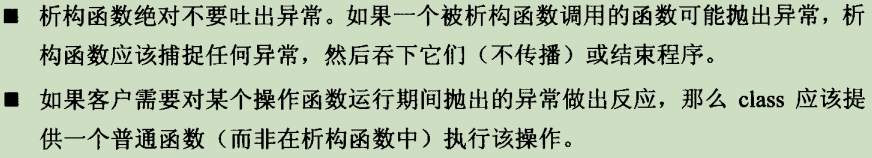

条款
base
- 1、View C++ as a federations of lanuages
- 2、Prefer consts, enums and inlines to #define
对于单纯常量对象，最后以const对象或enums替换#define
对于形似函数的宏，最好用inline函数替换#define -
3、Use const whenever possible
函数返回一个常量值，避免诸如"a*b=c"这种原意是判断相等，而错写成赋值的操作，这种错误在编译器就会检测出来。
某些函数会返回一个常量引用，一来可以提供传递效率，二来可以避免通过返回的引用修改实际的对象。 -
4、Make sure that objects are initialized before they're used.
1>. 手工初始化内置型non-member对象。 2>. 使用成员初始化列表来初始化对象所有成分。 3>. 由于C++对于“定义在不同编译单元内的non-local static对象”的初始化次序并无明确定义， 因此可以将non-local static对象的声明放置在函数内，这样其就变成了local static对象， 而该函数又返回该对象的reference。因为C++保证, 函数内的local static对象会在“该函数调用期间，首次遇到该对象之定义式”时被初始化。 通过调用该函数，可以保证获得一个指向已经初始化的对象的reference。
ctor\dtor\assignment
-
5、了解C++默默编写并调用了哪些函数
一般情况，编译器可以为class创建默认constructor、copy-constructor、copy-assignment以及destructor， 但当class内含有reference/pointer/const成员，以及base classes将copy-assignment设置为private时，无法创建默认copy-assignment。 -
6、若不想使用编译器自动生成的构造函数，就应该明确拒绝
使用=delete；或者将其声明为private, 不过这样其member和friend仍然能访问，可以创建一个base class，在其中将这些函数声明为private，让你的类继承这个base class，则出现试图访问这些函数时，会在编译器件报错。 -
7、为多态基类声明virtual析构函数
如果一个class 包含任何的virtual 函数，则应该有一个virtual 析构函数。
这个规则只适用于polymorphic base classes身上，这种class设计的目的是为了通过base class接口来处理derived class对象，否则根据静态绑定，调用的将是base class的析构函数，而非指针实际指向的derived clas; 至于那些不是为了多态目的设计的base class，则无需虚析构函数。 -
8、不要让异常逃离析构函数
 -
9、决不在constructor和destructor内调用virtual函数
- 10、令operator=返回一个 reference to *this
为了实现连锁赋值，且适用于所有赋值相关运算 - 11、在operatot=中处理自我赋值
//identity test
Object& Object::operator=(const Object& rhs){
if(this==&rhs)return *this;
delete p; // delete pointer member
p = new T(*rhs.p);
return *this;
}
//考虑异常安全和自我赋值安全
Object& Object::operator=(const Object& rhs){
T* tmp=p;
p = new T(*rhs.p);
delete tmp; // delete old pointer member; 如果new 过程抛出异常，此时原先的指针将保持原状
return *this;
}
Object& Object::operator==(Object rhs){ //pass by value
swap(rhs); //交换*this和rhs的数据
return *this;
}
- 12、Copy all parts of an object
当你编写一个copying函数(包括copy ctor和copy-assignment)时，确保复制所有local成员变量；调用base class相应copying函数。
另外需注意:不应该让copy assignment操作符调用copy ctor(试图构造一个已经存在的对象)，反之(试图对一个尚未构造的对象赋值)亦如此；消除两者重复代码的做法，是将这部分代码封装到其他函数，被两者调用。
resource management
-
13、以对象管理资源
将资源(指针类型)放进对象内，当对象被销毁时，析构函数会自动释放资源(通常依赖于智能指针)。
获得资源后立刻放入管理对象，(作为构造函数参数，用以初始化);(RAII:Resource Acquistion Is Initialization)
管理对象运用析构函数确保资源得到释放;
一个合适的例子就是通过对象管理锁，这样当中途异常退出时，对象的析构函数会释放锁。 -
14、在资源管理类中小心copying行为
对于非heap-based(heap-based即通过new获得的指针)的资源，智能指针不适合作为resource handler。而当RAII对象发生复制时，一般有两种可能:禁止复制或者对底层资源采用引用计数法(shared_ptr采用的做法)，不过也可以采用深拷贝或者转移底部对象所有权(auto_ptr采用的做法，资源的所有权从复制物转移到目标物) -
15、在资源管理类中提供对原始资源的访问
每一个RAII class应该提供一个取得其所管理之资源的方法；
对原始资源的访问可能经由显示转换(比较安全)或者隐式转换(方便客户) -
16、成对使用new和delete时要采取相同形式
- 17、以独立语句将newed对象置入智能指针
int priority();
void process(shared_ptr<Widget> pw, int pri);
//参数传递前有三个步骤，调用priority()，new Widget，构建shaerd_ptr
//new操作一定发生在构建shared_ptr之前，但priority()调用可能发生在两者中间，
//如果此时发送异常，则new得到的资源将会泄漏
process(shared_ptr<Widget>(new Widget), priority());
//因此采用独立语句将newd对象置入智能指针
shared_ptr<Widget> pw(new Widget);
process(pw, priority);
design and declarations
-
18、让接口容易被正确使用，不易被误用
shared_ptr支持定制删除器，可防范cross-DLL problem(object在一个动态链接库DLL中被new创建，却在另一个DLL内被delete销毁，在许多平台上这会导致运行期错误；而share_ptr包含缺省的deletor, 其来自创建时的DLL，因此其调用的是原来的DLL中的deletor) -
19、设计class犹如设计type
-
20、Prefer pass-by-reference-to-const to pass-by-value
前者效率更高；
且当函数类型是一个基类类型，如果传递给其一个派生类对象时，则会重新构造，丢失派生类的特化信息(即切割问题)，选择pass-by-reference传递参数则可以避免sliceing(也就是唯有以基类的指针和引用才能支持面向对象编程概念)。
对于内置类型和STL的迭代器以及函数对象而言，pass-by-value往往更适当。 -
21、必须返回对象时，不要试图返回reference
不允许函数返回一个reference或pointer指向local object。(local object在栈空间中创建，函数返回时会销毁栈空间)
如果在函数内通过new在heap内创建一个object，虽然可以返回其引用，但却不易被人发觉需要delete，从而发生内存泄漏，这种做法也要避免。 -
22、将成员变量声明为private
从封装角度看，只有两种访问权限:private(提供封装)和其他(不提供封装，protected并不比public更具封装性，其会影响derived class)。
封装成员变量，可以确保class的约束条件总是得到维护，只有成员函数可以影响它们。
被封装的东西意味着修改这部分也更容易，因为外界只能通过有限的函数来访问；而那些没有被封装的东西，外界可以随意访问、修改，对于设计者来说，不能轻易修改，否则会造成旧版本不能兼容。 -
23、Prefer non-member non-friend functions to member functions
基于22则第三点的原因，在实现相同功能的前提下，non-member non-friend funtion相比member function有更大的封装性，它无法访问class内private部分，故前者也更受设计者欢迎。 -
24、若所有参数皆须类型转换，请为此采用non-member function;
如果需要为某个函数的所有参数(包括this指针所指的隐喻参数)进行类型转换，则这个函数最好是non-member function。 -
25、考虑写出一个不抛异常的swap函数
std提供的缺省swap函数，在处理包含指针成员的对象时，这种默认操作将显得冗余
对于内含指针成员的类，可以如下形式，设计swap函数。
implementation
-
26、尽可能延后变量定义式的出现时间
延后变量的定义，直到非得使用变量的前一刻为止，甚至进一步延迟到这份定义能够获得初值实参为止；这样做的目的是为了避免构造和析构非必要对象，还可以避免无意义的default构造行为。
对于只在循环体内使用的变量，如果其类型的构造和析构成本 大于 赋值成本，则在循环体外定义，反之在循环内定义。 -
27、尽量少做转型动作

-
28、避免返回handles指向对象内部成分
避免返回handles(包括reference、指针、迭代器)指向对象内部，因为无论这个handle是否有const，也不论返回其的函数是否为const，都有可能造成handle比其所指向对象寿命更长的风险，例如指向一个临时对象的内部，而handle却被保存为长期对象。
不过对于一些重载operator[]的类型，可以通过返回引用，来直接修改其内部对象；除此之外，应谨慎返回指向对象内部的handles。 -
29、为异常安全而努力是值得的
当异常被抛出时，异常安全函数即使发生异常也不会泄漏任何资源或允许任何数据败坏，这样的函数区分三种可能的保证:
基本承诺: 如果异常被抛出，程序内的任何事物仍然保持在有效状态下，没有任何对象或者数据结构会因此而败坏；但程序的exact state不可预料。
强烈保证：如果异常被抛出，程序状态不改变，即函数成功就是完全成功；函数失败，程序就回复到调用函数之前的状态。
通常情况，copy-and-swap策略是一种好的做法：为打算修改的对象(原件)做出一份副本，然后在副本上做一切修改。若修改过程抛出异常，原对象仍保持未改变状态；待所有修改成功后，再将副本和原件在一个不抛出异常的操作中swap。
由于函数提供的异常安全保证取决于其所调用的各个函数中异常安全保证最低者，因此即使采用copy-and-swap，依旧无法保证整个函数有强烈的异常安全性； 且做出一份副本需要额外的耗时和空间消耗。 因此强烈保证并非对所有函数都可实现或具备现实意义。
nothrow 保证：承诺绝不抛出异常，总是能完成它们原先承诺的功能，例如内置类型的所有操作都提供nothrow保证。 -
30、understanding the ins and outs of inlining
-
31、将文件间的编译依存关系降至最低
如果class A的定义文件中包含了一系列其他类型的定义式(通过include实现)，则当那些类型发送改变时，并重新编译时，此时所有包含A的定义式的文件都将重新编译，这即是连串编译依存关系。
尽量以class声明式替换class定义式，并且只依靠class 声明式就能定义出指向该类型的reference或pointer; 如果定义某类型的objects，就必须用到其定义式。以声明依存性代替定义依存性，可以改善前述问题。
进一步可以为声明式和定义式提供不同的头文件；并且通过handle class和interface class来降低接口和实现间的耦合，从而降低文件间的编译依存性。
handle class的做法是：A只提供接口，B负责实现接口，A包含一个指向B类型的指针pImpl(pointer to implementation), 通过pImpl来调用B中实现好的接口；这样A的用户就与其包含的额外的classes的实现相分离，那些classes的修改也不会需要A的客户端重新编译。
interface class的做法是：令A成为一种特殊的abstract class, 只有一个virtual 析构函数，和一组纯虚函数，用以描述函数接口；并且对于派生体系内全部都相同的做法，可以让其成为interface class中non-virtual函数，派生类共同使用这一份函数。
上述做法的缺点，即为每一次访问增加了一层间接性，如通过pImpl或者虚函数表，这都会带来额外的开销，同时pImpl是通过动态分配得到的，需要考虑bad_alloc异常的可能性。 -
32、make sure public inheritance model "is-a"
public继承 主张能够施行于base class对象身上的每件事情，也可以施行于derived class对象身上；让类A以pulic inherit形式继承类B，需要确保 A “is a” B, 且对于B对象的所有操作都能施加到A对象上。 -
33、避免hiding继承而来的name
可参考c_base中的重载/覆盖/隐藏/using。 -
34、区分接口继承和实现继承
声明一个pure virtual function，目的是为了让derived class只继承函数接口；一般情况下基类中纯虚不需要定义，但其也可以提供定义，作为缺省实现；此时派生类如果覆盖这个纯虚函数，可以提供自己的实现，或者通过Base::fun(args)形式直接调用纯虚函数的实现；如果派生类不提供fun的实现，则不会通过编译，因为fun为一个pure virtual function。这样做的目的是为了避免如果fcn是普通虚函数，但不同的派生类要求的缺省实现不同，所以如果派生类想要基类中的缺省实现，必须主动提出，否则就重新实现。
声明一个普通虚函数，目的是为了让derived class继承函数的接口和缺省实现。
声明一个普通非虚函数，意味着derived class中继承函数的接口，同时提供一份强制的实现，即期望不同的派生类对象有相同的行为；如果派生类中重新声明了一个与此同名的函数，则无论参数是否相同，基类中的版本都将被隐藏。 -
35、考虑虚函数以外的其他选择
-
36、绝不重新定义继承而来的non-virtual函数
如果需要重新定义，则将该函数声明为virtual function。 -
37、绝不重新定义继承而来的缺省参数值
因为缺省参数值都是静态绑定，在使用多态时(指通过pointer或reference来访问派生类对象)，重新定义继承而来的虚函数中的缺省参数，通常不会有如期行为发生，实际使用的依旧是基类提供的缺省参数值。 -
38、 Model "has-a" or "is-implemented-in-terms-of" through composition
复合(composition) 是类型之间的一种关系，当某种类型的对象包含其他种类型的对象，便是这种关系。
-
39、谨慎使用private 继承
private 继承意味着implemented-in-terms-of(根据某物实现出)，即派生类与基类并不存在is-a的关系。
当你面对并不存在is-a关系的两个classes，其中一个需要访问另一个protected成员，或者需要重新定义其一或多个virtual函数，可以考虑private继承。 -
40、谨慎使用多重继承
templates and generic programming
-
41、了解隐式接口和编译期多态
编译器多态：以不同的template参数具现化function templates 会导致调用不同的函数，和重载类似，都是编译器绑定；
运行期多态: 运行期根据参数的动态类型决定动态绑定哪一个虚函数。 -
42、understand the two meanings of typename
-
43、学习处理模板化基类内的名称
对于一个继承templatized base class的派生模板类，如果直接在其内部调用基类中的public 成员函数，并不能通过编译；因为编译器知道base class template有可能会被特化，而特化版本可能不提供和一般性template相同的接口。因此它拒绝在templatized base class内寻找继承而来的名称。
可在derived class templates通过 this-> 指涉base class templates内的成员名称，或使用using 声明式；或明白指出被调用的函数位于base class内。
如果提供一个没有sendClear接口的特化版本，将无法通过编译。
template<typename company>
class LoggingMsgSender:: public MsgSender<company>{
public:
using MsgSender<company>::sendClear; //明确告诉编译器函数位于base class内
void sendClearMsg(const MsgInfo& info){
...
this->sendClear(info); //假设sendClear被继承
// MsgSender::sendClear(info); //这种情况会破坏virtual绑定行为
...
}
}
-
44、将与参数无关的代码剥离templates
-
45、运用成员函数模板接受所有兼容类型
一个template class接受不同类型参数得到的实例之间并不存在固有关系，即使这些类型之间本身存在继承关系。
构造模板:
对构造模板施加约束:
成员函数模板:
-
46、需要类型转换时请为模板定义非成员函数
为了让类型转换可能发生于所有实参上，我们需要一个non-member函数(条款24); 为了令这个函数被自动具现化，我们需要将它声明在class内部，即令它成为一个friend函数。
如果这个non-member函数定义在class外部，则对于可能发生的隐式类型转换，调用相关函数并不能成功；因为template实参推导过程中，不会考虑隐式转换；所以传递给函数的实参发生隐式转换，编译器并不能准确知道应该具现化哪个函数。 -
47、使用traits classes表现类型信息
typedef typename iterator_traits::value_type valType; -
48、认识模板元编程
customizing new and delete
-
49、undertand the behavior of the new handler
当operator new抛出异常以反映一个未获满足的内存需求之前，它会先调用一个客户指定的错误处理函数，即一个new-handler。
一个设计良好的handler必须包含:
让更多内存可用、安装另一个new-handler(无限循环)、卸载new-handler(将null指针传给set_new_handler)、抛出bad_alloc异常、不返回(调用abort或exit).
-
50、了解new和delete的合理替换时间
-
51、编写new和delete时需固守常规
-
52、write placement delete if you write placement new

补充
- 53、 不用忽略编译器的警告
- 54、熟悉包括TR1在内的标准程序库
- 55、熟悉Boost